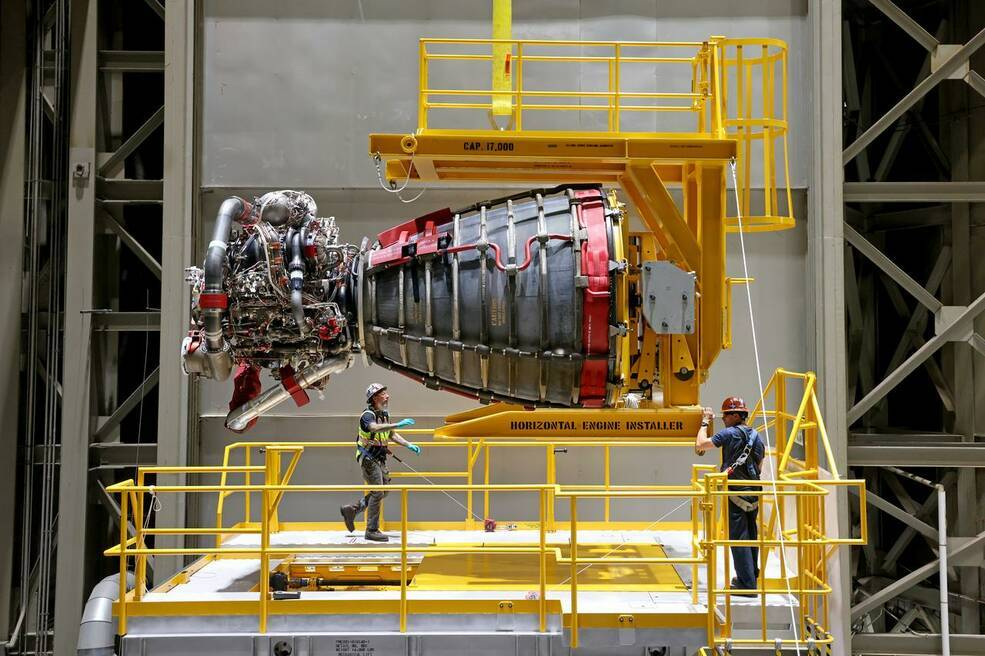
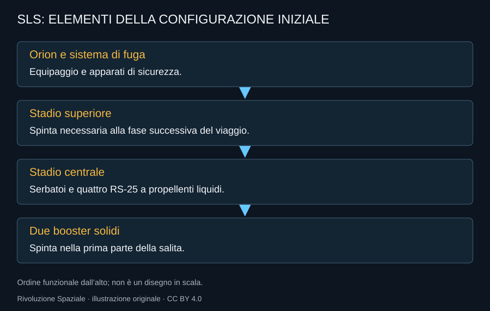

SLS rende visibile il lato governativo di Artemis. È grande, potente e costruito per lanciare Orion verso missioni oltre l’orbita bassa. La sua presenza riaccende un dibattito antico: quanto convenga investire in una capacità pubblica dedicata e quanto affidarsi a un mercato di servizi di lancio.
Il patrimonio dello Shuttle, dentro un altro razzo
Lo stadio centrale usa quattro RS-25 a propellenti liquidi, affiancati durante la partenza da due booster solidi. I primi motori provengono dall’esperienza Shuttle, con modifiche per le nuove condizioni operative. Il riuso di una tecnologia non significa che il razzo nel suo insieme sia riutilizzabile: questa configurazione non recupera gli stadi per un nuovo lancio.

La separazione è importante. Un RS-25 può avere una storia di impiego precedente e finire la propria vita nel volo SLS. La disponibilità di motori ereditati è una risorsa iniziale; la produzione di nuovi esemplari deve poi sostenere la continuità del programma.
Una sequenza di stadi
Il lanciatore deve prima superare la parte più impegnativa della salita e poi fornire al veicolo la condizione necessaria alla missione. Gli stadi superiori e le loro configurazioni vanno descritti con una data: una versione studiata per il futuro non è automaticamente quella impiegata nei voli già effettuati.

Che cosa dimostra una partenza
Il successo di Artemis I mostra che la catena di lancio può portare Orion sulla missione prevista. Non misura da solo la frequenza sostenibile del servizio. Per ripetere occorrono stadi, motori, booster, infrastrutture e una capacità di integrazione che non dipenda da un’impresa eccezionale ogni volta.
Artemis II aggiunge il trasporto dell’equipaggio. La qualifica umana e l’esperienza della missione non devono essere confuse con un confronto commerciale di prezzo per chilogrammo. Un lancio umano dedicato comprende requisiti e risorse che non coincidono con quelli di un cargo.
Il confronto con i grandi lanciatori commerciali
Starship propone un sistema profondamente diverso, basato sul recupero e sul rifornimento nello spazio. Il confronto è interessante se conserva le differenze. La possibilità di un costo futuro più basso non equivale a un servizio già qualificato per lo stesso compito di SLS e Orion.
Questo non chiude il dibattito sui costi di SLS. Al contrario, lo rende più preciso: si devono confrontare capacità, disponibilità, sicurezza e investimento necessario. Non basta contrapporre il prezzo dichiarato di un volo futuro al costo complessivo di un programma sviluppato per anni.
Standardizzare per ripetere
La revisione del 2026 mette l’accento sulla configurazione e sulla possibilità di aumentare il ritmo. Un programma può perdere tempo se ogni missione richiede anche il debutto di un apparato importante. La scelta di ripetere una configurazione è una scelta industriale, non soltanto una rinuncia a prestazioni.
SLS resta quindi un elemento centrale della fase documentata in questo libro. Il suo futuro dovrà essere valutato attraverso decisioni effettive, non attraverso l’idea che qualunque architettura duri per sempre.
Fonti pubbliche e tracce
- NASA, Space Launch System. Architettura e caratteristiche; evoluzioni previste distinte dall’hardware volato.
- NASA, RS-25 Core Stage Engine. Motori ereditati e nuova produzione.
- NASA, Artemis I. Missione del 2022, senza equipaggio.
- NASA, nuova architettura Artemis, febbraio 2026. Artemis III in orbita terrestre nel 2027; obiettivo Artemis IV nel 2028.